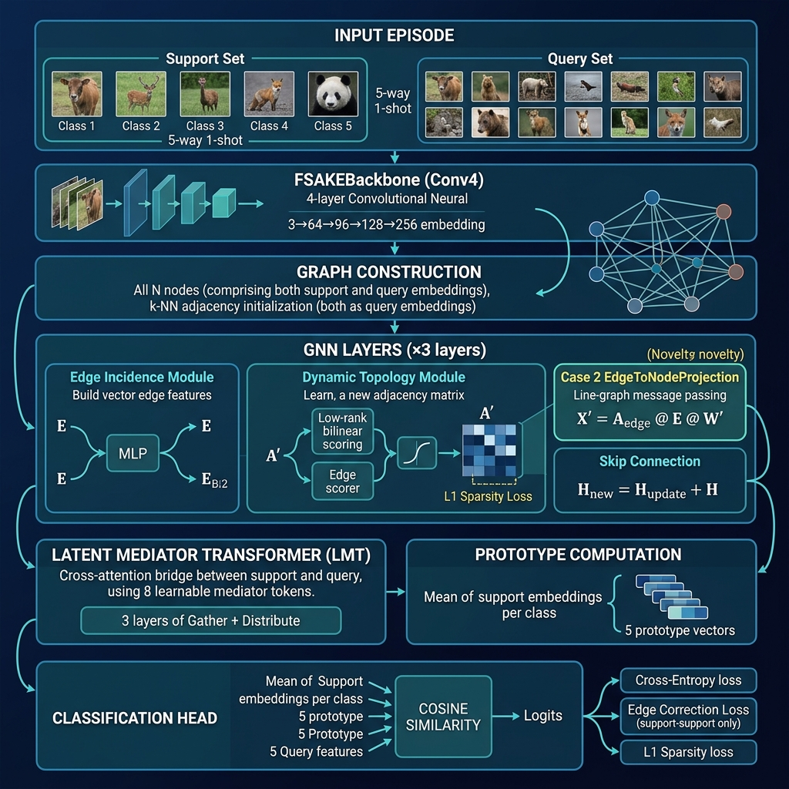

Paper identity: A topology-learning framework with explicit structural regularization and supervised relational recovery for episodic few-shot learning.
Extension of FSAKE with Supervised Relational Recovery — introducing vector-valued edge features, dynamic graph topology, and a Latent Mediator Transformer into the few-shot episodic learning pipeline.
Few-shot learning (FSL) asks: given only a handful of labeled examples per class, can a model recognize new classes? The standard episodic protocol draws N-way K-shot episodes — N classes, K labeled support examples each, and a query set to classify.
Most FSL methods either:
DEKAE's key claim: Using vector-valued edge features and supervised topology recovery enables richer relational reasoning that scalar-weight GNNs cannot represent.

Input Episode
│
├── Support Set: N_way × K_shot images (5 labeled, 5-way 1-shot)
└── Query Set: N_way × N_query images (15 unlabeled)
│
▼
┌─────────────────────────────────────┐
│ FSAKEBackbone (Conv4) │ ← shared backbone, identical to FSAKE
│ 3→64→96→128→256→128-dim │ for fair comparison
│ 4 conv blocks + BN + LeakyReLU │
│ Output: (N_s + N_q, 128) │
└─────────────────────────────────────┘
│
▼ Initial Graph: k-NN adjacency on all nodes
│
┌─────────────────────────────────────┐ ── Repeated ×3 GNN layers ──
│ GNN Layer │
│ ┌──────────────────────────────┐ │
│ │ EdgeIncidenceModule │ │ E = MLP([h_i ‖ h_j]) → (|E|, 128)
│ │ edge features: E ∈ R^{|E|×d}│ │ vector per edge, not scalar
│ └──────────────────────────────┘ │
│ ┌──────────────────────────────┐ │
│ │ DynamicTopologyModule │ │ A'_ij = sigmoid(bilinear(h_i,h_j) +
│ │ new adjacency: A' (learned) │ │ edge_scorer(E_ij))
│ │ + L1 sparsity loss │ │ row-normalised, spectral-normed weights
│ └──────────────────────────────┘ │
│ ┌──────────────────────────────┐ │
│ │ EdgeToNodeProjection (Case2) │ │ X' = A_edge @ E @ W'
│ │ THE NOVEL CONTRIBUTION │ │ nodes update from EDGE VECTORS
│ │ line-graph message passing │ │ (impossible with scalar attention)
│ └──────────────────────────────┘ │
│ + Skip connection: H ← H_new + H │
└─────────────────────────────────────┘
│
▼
┌─────────────────────────────────────┐
│ Latent Mediator Transformer (LMT) │ 8 learnable mediator tokens M ∈ R^{8×128}
│ Phase A (Gather): M ← CrossAttn(Q=M, KV=[Q‖S]) │
│ Phase B (Distrib): Q ← CrossAttn(Q=Q, KV=M) │
│ S ← CrossAttn(Q=S, KV=M) │
│ × 3 layers — O(m(N_q+N_s)d) complexity │
└─────────────────────────────────────┘
│
▼
┌──────────────────────────────────────┐
│ Prototype Computation │ mean of support embeddings per class
│ Cosine Similarity → Logits │ cosine(H_query, prototypes)
└──────────────────────────────────────┘
│
▼
Total Loss = CrossEntropy(logits, q_labels)
+ λ_edge × EdgeCorrectionLoss (support-support pairs ONLY)
+ L1 sparsity on A'
| Component | HGNN (A1) | FSAKE (A2) | DEKAE |
|---|---|---|---|
| Graph construction | Static k-NN | Dynamic scalar adjacency | Dynamic vector-valued edges |
| Edge representation | None | Scalar A^(l)_ij ∈ R |
Vector e_ij ∈ R^d |
| Node update | A @ H |
softmax(MLP(|h_i−h_j|)) @ H |
A_edge @ E @ W' (line-graph MP) |
| Supervised topology | None | None | Edge correction loss (S-S only) |
| Cross-set alignment | None | None | Latent Mediator Transformer |
EdgeToNodeProjectionStandard attention updates nodes from neighboring node features:
X'_i = Σ_j α_ij · h_j ← scalar α, node source
DEKAE's Case 2 updates nodes from edge feature vectors:
X'_i = Σ_{e=(i,j)} w_i,e · (E_e @ W') ← vector E_e, edge source
This is structurally equivalent to one step of line-graph message passing and is the mechanism that enables edge-level supervision — impossible when edges are scalars.
RandomResizedCrop + RandomHorizontalFlip + ColorJitterL_total = L_CE(logits, q_labels)
+ λ_edge · L_edge_correction ← contrastive on support-support edges
+ L1_sparsity ← on learned A'
Edge correction loss (Section 9):
L_edge = Σ_{i,j ∈ Support}
[y_i == y_j] · (1 - cos(h_i, h_j)) ← pull same-class together
+ [y_i != y_j] · max(0, cos(h_i, h_j) - margin) ← push different apart
⚠️ Only support-support pairs are used. Query supervision is strictly forbidden to prevent label leakage.
| Phase | Epochs | Topology |
|---|---|---|
| Warm-up | 1–5 | Static k-NN adjacency |
| Edge-loss ramp | 6–25 | λ_edge linearly ramps 0 → 0.05 |
| Full DEKAE | 26–200 | Dynamic A' + full edge loss |
lr=1e-3, weight_decay=1e-6 (matching FSAKE exactly)gamma=0.5 every ~33 epochs (mirrors FSAKE's 10k-iteration halve policy)5.0| Group | What changes | Ablations |
|---|---|---|
| A | Graph construction | A0 (ProtoNet), A1 (HGNN static), A2 (FSAKE dynamic scalar), A3 (Case1 edge-gating), A5+ (DEKAE) |
| B | Prototype strategy | B1 (max-pool), B2 (nearest-centroid), B3 (mean) |
| C | Edge projection type | C1 (none), C2 (linear), C3 (MLP default) |
| D | Seed stability & topology init | Multiple seed runs, topology sensitivity |
| E | Sparsity mode | E1 (L1), E2 (Laplacian), E3 (top-k hard mask) |
| H | LMT ablations | H1 (no LMT), H2 (fixed mediators), H3 (zero init), H4 (gather only) |
| Section | Description |
|---|---|
| 0 | Google Drive mount & persistent paths |
| 1 | Environment setup & GPU check |
| 2 | Data pipeline (CIFAR-FS / miniImageNet download + archive) |
| 3 | EpisodicSampler & synthetic episode generator |
| 4 | FSAKEBackbone (Conv4, 128-dim output, ~317K params) |
| 5 | Static k-NN graph module (A1_HGNN baseline) |
| 6 | EdgeIncidenceModule — vector edge features |
| 7 | DynamicTopologyModule — adaptive A' with sparsity |
| 8 | EdgeAwareKnowledgeFilter (Case 1) & EdgeToNodeProjection (Case 2) |
| 9 | edge_correction_loss — supervised topology recovery |
| 10 | Sparsity regularization utilities & graph health metrics |
| 11 | DEKAEModel full assembly + LatentMediatorTransformer |
| 12 | Training loop, health monitor, checkpointing |
| 12b | ▶ Execute training (CIFAR-FS, 5-way 1-shot) |
| 13 | Evaluation utilities + statistical testing |
| 13b | ▶ Real test-set evaluation |
| 14 | Synthetic topology recovery experiment |
| 15b | ▶ Ablation sweeps (Groups A & E) |
| 15c | Edge feature comparison (Group C) |
| 15d | Seed stability & topology init (Group D) |
| 16 | W&B metrics logging |
| 17 | Visualization suite |
1. Run cells 0–3 → setup, data, loaders
2. Run cells 4–12 → architecture definitions
3. ▶ Run cell 12b → training (~60–90 min on T4 GPU)
4. ▶ Run cell 13b → test-set evaluation
5. ▶ Run cell 14 → synthetic topology recovery
6. ▶ Run cell 15b → ablation sweeps (Groups A & E)
torch >= 2.0
torch-geometric
learn2learn (episodic dataset loading)
torchvision
wandb (optional, for metrics logging)
scipy, scikit-learn
matplotlib, seaborn, networkx
tqdm
Designed to run on Google Colab T4 GPU (15.6 GB VRAM).
Total model parameters: ~1.58M (backbone: ~317K, GNN modules: ~850K, LMT: ~1M, shared with GNN layers).
Checkpoints and results are saved persistently to Google Drive under MyDrive/DEKAE_Project/.
| Method | Graph | Edge type | Supervised topology |
|---|---|---|---|
| ProtoNet (A0) | None | — | — |
| HGNN (A1) | Static k-NN | Scalar weight | None |
| FSAKE (A2) | Dynamic per-layer | Scalar softmax(MLP(|h_i−h_j|)) |
None |
| DEKAE | Dynamic per-layer | Vector e_ij ∈ R^d |
Contrastive edge loss |
The primary dataset is CIFAR-FS (100 classes, 600 images each, split 64/16/20).
miniImageNet is supported as an additional benchmark (required for direct FSAKE paper comparison).